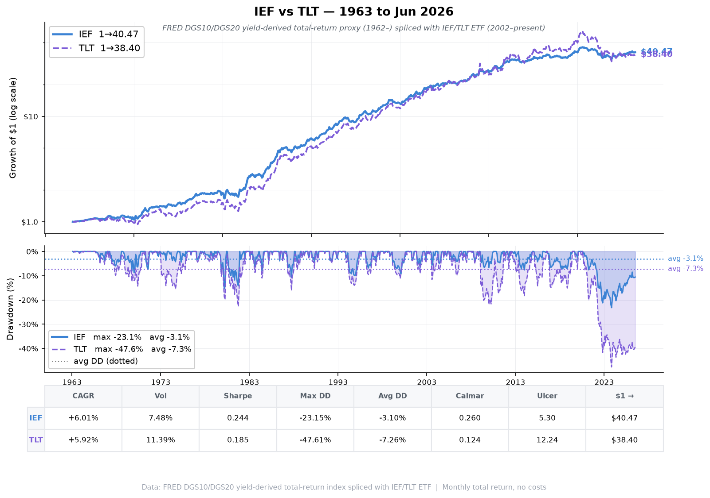
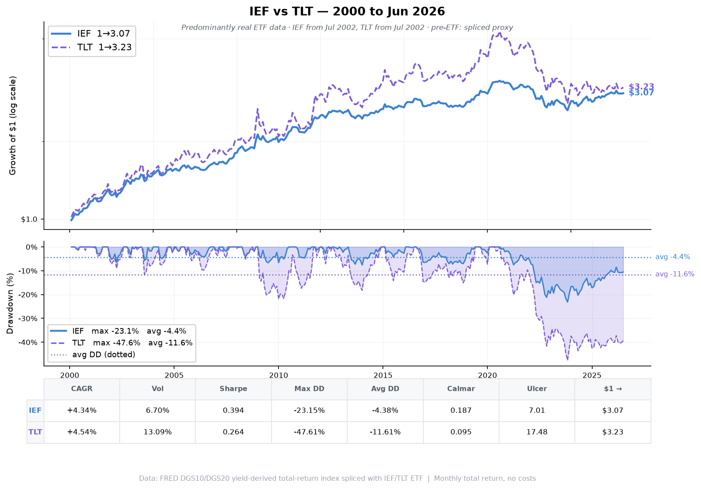

Intermediate-Term (7–10yr) vs Long-Term (20+yr) · Two study periods: 1963–Jun 2026 (63 years, spliced proxy) and 2000–Jun 2026 (26 years, predominantly ETF era). Monthly total return, dividend-adjusted. Data: FRED DGS10/DGS20 yield-derived total-return index (1962–) spliced with IEF/TLT ETF (Jul 2002–present).

$1 invested January 1963 · log scale (top) · drawdown from peak with avg DD lines (bottom)
| Metric | IEF (7–10yr) | TLT (20+yr) | Edge |
|---|---|---|---|
| Period | Jan 1963 – Jun 2026 (63 years) | — | |
| CAGR | +6.01% | +5.92% | IEF +9 bp |
| Annualised Volatility | 7.48% | 11.39% | IEF 1.5× lower |
| Sharpe (dynamic rf) | 0.244 | 0.185 | IEF +32% |
| Max Drawdown | −23.15% | −47.61% | IEF half the DD |
| Avg Drawdown | −3.10% | −7.26% | IEF 2.3× shallower |
| Calmar Ratio | 0.260 | 0.124 | IEF 2.1× better |
| Ulcer Index | 5.30 | 12.24 | IEF less pain |
| Best Month | +12.19% | +14.34% | TLT |
| Worst Month | −7.77% | −13.07% | IEF less severe |
| % Positive Months | 59.3% | 56.3% | IEF |
| Avg Up Month | +1.80% | +2.66% | TLT |
| Avg Down Month | −1.37% | −2.20% | IEF less damage |
| Best Year | +39.1% (1982) | +45.7% (1982) | TLT |
| Worst Year | −15.2% (2022) | −31.2% (2022) | IEF half the loss |
| $1 Final Value | $40.47 | $38.40 | IEF +$2.07 |
* 2026 partial year (Jan–Jun only)

$1 invested January 2000 · log scale (top) · drawdown from peak with avg DD lines (bottom)
| Metric | IEF (7–10yr) | TLT (20+yr) | Edge |
|---|---|---|---|
| Period | Jan 2000 – Jun 2026 (26 years) | — | |
| CAGR | +4.34% | +4.54% | TLT +20 bp |
| Annualised Volatility | 6.70% | 13.09% | IEF 2× lower |
| Sharpe (dynamic rf) | 0.394 | 0.264 | IEF +49% |
| Max Drawdown | −23.15% | −47.61% | IEF half the DD |
| Avg Drawdown | −4.38% | −11.61% | IEF 2.6× shallower |
| Calmar Ratio | 0.187 | 0.095 | IEF 2× better |
| Ulcer Index | 7.01 | 17.48 | IEF less pain |
| Best Month | +7.75% | +14.34% | TLT |
| Worst Month | −5.02% | −13.07% | IEF less severe |
| % Positive Months | 56.3% | 55.0% | IEF |
| Avg Up Month | +1.67% | +3.03% | TLT |
| Avg Down Month | −1.31% | −2.73% | IEF less damage |
| Best Year | +17.9% (2008) | +34.0% (2011) | TLT |
| Worst Year | −15.2% (2022) | −31.2% (2022) | IEF half the loss |
| $1 Final Value | $3.07 | $3.23 | TLT +$0.16 |
* 2026 partial year (Jan–Jun only)
| Metric | IEF 1963–2026 | TLT 1963–2026 | IEF 2000–2026 | TLT 2000–2026 |
|---|---|---|---|---|
| CAGR | +6.01% | +5.92% | +4.34% | +4.54% |
| Volatility | 7.48% | 11.39% | 6.70% | 13.09% |
| Sharpe | 0.244 | 0.185 | 0.394 | 0.264 |
| Max Drawdown | −23.15% | −47.61% | −23.15% | −47.61% |
| Avg Drawdown | −3.10% | −7.26% | −4.38% | −11.61% |
| Calmar | 0.260 | 0.124 | 0.187 | 0.095 |
| Ulcer Index | 5.30 | 12.24 | 7.01 | 17.48 |
| $1 Final Value | $40.47 | $38.40 | $3.07 | $3.23 |
| Correlation | 0.908 | 0.909 | ||
| Episode | IEF | TLT | Takeaway |
|---|---|---|---|
| 1982 Rate Peak & Bull Onset | +39.1% | +45.7% | Long duration wins biggest when rates peak |
| 1994 Taper Tantrum (early) | −7.0% | −8.3% | IEF less exposed to Fed surprises |
| 1999 Pre-2000 Rate Rise | −7.7% | −9.8% | IEF cushions rate rises better |
| 2000 Dot-com + Rate Cuts | +17.2% | +22.3% | Long duration rewards in crises |
| 2008 Financial Crisis | +17.9% | +34.0% | Max-duration flight-to-safety surge |
| 2009 Rate Backup | −6.6% | −21.8% | TLT 3× more pain on reversal |
| 2011 Euro Crisis + QE | +15.6% | +34.0% | Flight-to-safety doubly rewards TLT |
| 2013 Taper Tantrum | −6.1% | −13.4% | TLT more exposed to surprises |
| 2014 Bond Bull | +9.1% | +27.3% | Falling rates → TLT 3× upside |
| 2020 COVID + QE | +10.0% | +18.2% | Fastest-ever Fed response |
| 2022 Hiking Cycle (+425 bp) | −15.2% | −31.2% | IEF loses half as much |
| 2025 YTD (Jan–Jun) | +8.0% | +4.2% | Mid-curve outperforms on rate plateau |
| Use Case | Preferred | Rationale |
|---|---|---|
| TAA / Trend-Following (GTAA) | IEF | Lower vol keeps SMA signals cleaner; smaller whipsaws |
| Recession hedge / flight-to-safety | TLT | Maximum duration = maximum rally when rates crash |
| 60/40 bond sleeve | IEF | Better risk-adjusted contribution; less drag in rate rises |
| Tactical duration bet | TLT | Higher beta gives more P&L per 1 bp move |
| Low-risk income / retiree bond | IEF | −23% max DD vs −48%; far more stomach-able |
| Inflation / stagflation environment | Both suffer — shorten duration to BIL/SHY instead | |